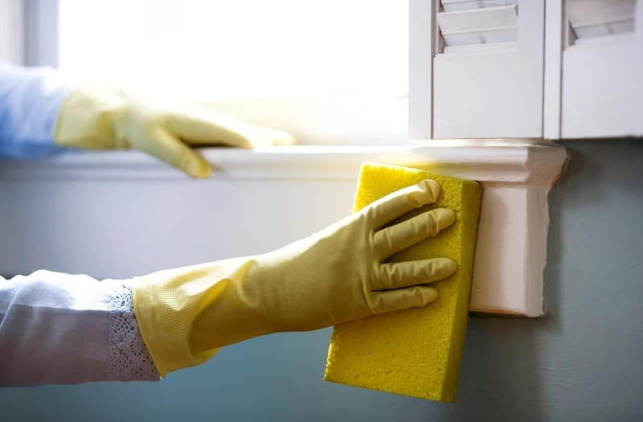
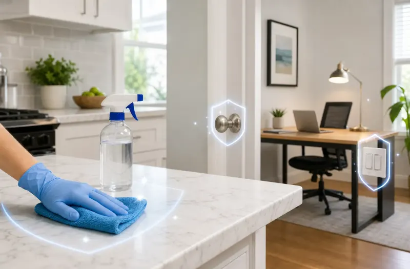

Weekly Cleaning
For busy households, families with kids or pets, or anyone who wants to always come home to a fresh house. Weekly visits keep things consistently clean without buildup.
A clean, comfortable home — every time, without the work. Pro Cleaning Services brings years of experience, a warm touch, and a thorough clean to your door.
Whether you need us weekly, every two weeks, or once a month — we're consistent, careful, and genuinely care about your home.
Home cleaning is our bread and butter. It's the service that forms the foundation of what we do — and it's the one Jennifer has built her reputation on over the last ten years.
When we come to clean your home, we don't rush through and call it done. We take the time to do each room right. We pay attention to the things you notice — the kitchen sink, the bathroom mirror, the floors — and we take care of the things you might not always get to yourself.
Every client is different. Every home is different. We get to know how you like things done and we show up consistently, so you can stop thinking about it altogether and just come home to clean.
A note about vacuuming: Jennifer does not bring her own vacuum. Every home is different, and her clients prefer it that way — no sharing equipment between houses, no worrying about what comes through the door. If you'd like vacuuming done, Jennifer will use yours. Our clients love this approach and it's one of the little things that sets us apart.
Pick the frequency that fits your life. We'll keep you on the books and show up reliably.
For busy households, families with kids or pets, or anyone who wants to always come home to a fresh house. Weekly visits keep things consistently clean without buildup.
Our most popular schedule. Every two weeks is often the sweet spot — frequent enough to stay ahead of the mess, manageable for most budgets.
A full clean once a month for homes that stay relatively tidy, or for clients who handle day-to-day upkeep and just want a thorough visit regularly.
Need a single visit for a special occasion, guests coming, or just a fresh start? We offer one-time cleans with the same attention to detail as our regular service.
"Some of my favorite clients are people who have kept their homes immaculate themselves for years — and it gets to a point where the physical part of keeping up with it just gets harder. Letting someone into your home for the first time is a big deal. I understand that completely."
"I want you to feel comfortable from the very first visit. My goal is that after I leave, your first thought is: that's exactly what I hoped it would be. And then I want to earn your trust enough that you never have to worry about it again."
— Jennifer Diehl, Owner, Pro Cleaning Services
More About JenniferHome cleaning is our core — but we cover a lot more for Salina and Saline County families.
Thorough cleaning for transitions — every cabinet, closet, and corner so the space is spotless for the next chapter.
Learn More
A top-to-bottom reset — baseboards, appliance interiors, behind furniture, grout, and everything in between.
Learn More
Professional disinfection and sanitizing to protect your family from illness and bacteria.
Learn MoreCall or text 785-452-0793, or fill out the form. We respond quickly and give you a straight, honest quote with no pressure.